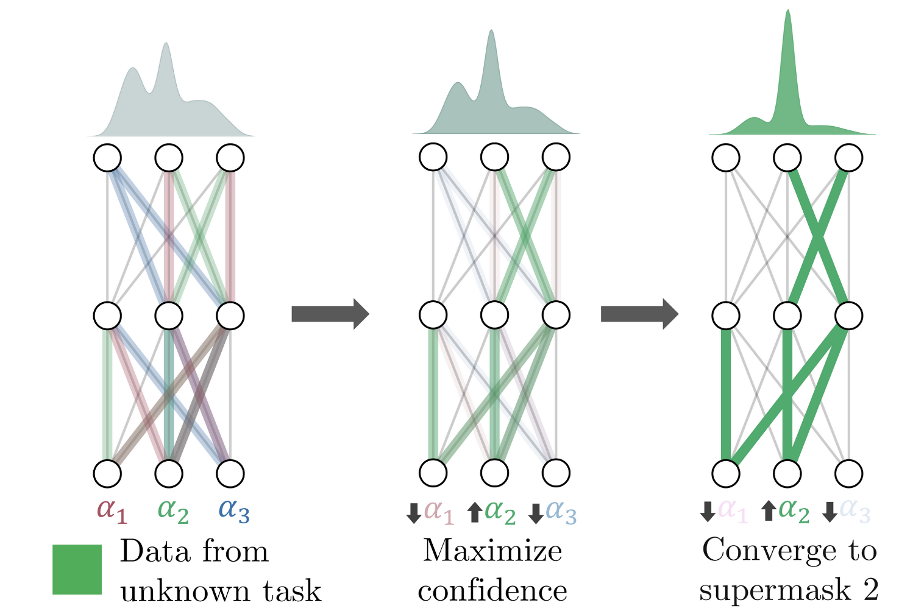
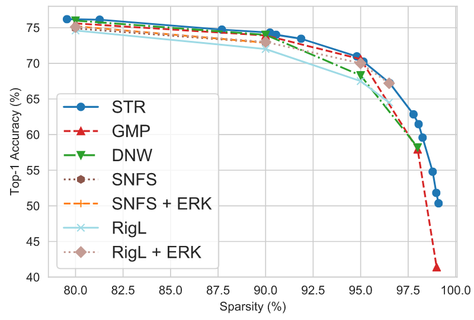
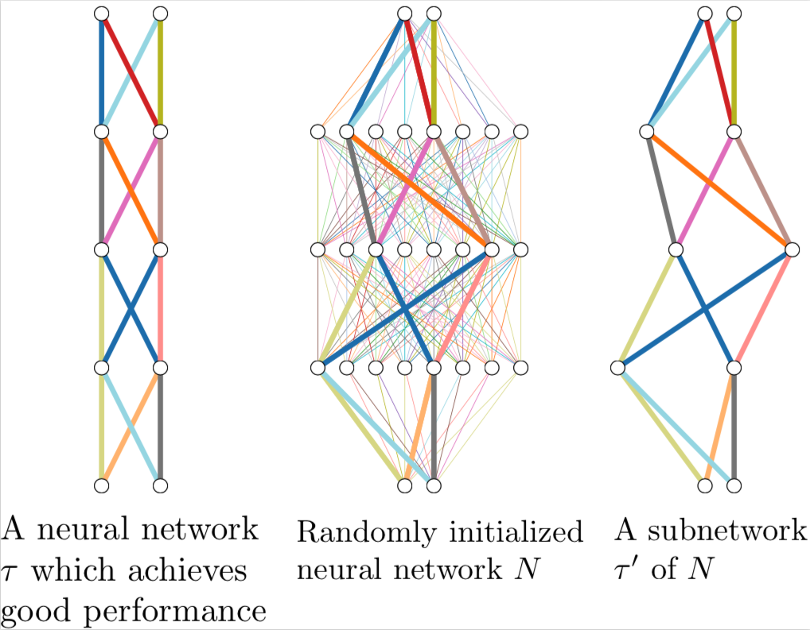

|
I am currently a predoctoral researcher on the PRIOR (vision) group at the Allen Institute for Artificial Intelligence (AI2), where I work on computer vision and machine learning. I am advised by Mohammad Rastegari and Aniruddha Kembhavi. I also collaborate with Ali Farhadi at the University of Washington Seattle. |
|
I'm broadly interested in computer vision, machine learning, and optimization. |
|  |
Mitchell Wortsman*, Vivek Ramanujan*, Rosanne Liu, Aniruddha Kembhavi, Mohammad Rastegari, Jason Yosinski, Ali Farhadi preprint, 2020 We present an application of hidden networks for continual learning, capable of learning thousands of tasks without catastrophic forgetting. We solve tasks individually, each solution corresponding to a subnetwork of a randomly initialized neural network. Using a superposition of these subnetworks, we demonstrate that the viability of this model for task inference. Finally, we introduce a coherent hierarchy for continual learning problems. |
|  |
Aditya Kusupati, Vivek Ramanujan, Raghav Somani, Mitchell Wortsman, Prateek Jain, Sham Kakade, Ali Farhadi To appear at the International Conference on Machine Learning 2020 We introduce a new strategy for pruning neural networks based off of the soft threshold reparametrization technique from signal processing. The layerwise sparsity budgets allow for very sparse but still highly performant trained models across a variety of architectures and tasks. |
|  |
Vivek Ramanujan*, Mitchell Wortsman*, Aniruddha Kembhavi, Ali Farhadi, Mohammad Rastegari Computer Vision and Pattern Recognition 2020 We demonstrate that you can find untrained subnetworks of common overparametrized convolutional neural networks at initialization that achieve performance similar to their densely trained counterparts. |
|
Aaron Gokaslan, Vivek Ramanujan, Kwang-In Kim, Daniel Ritchie, James Tompkin European Conference for Computer Vision, 2018 We improve on CycleGAN by allowing for better shape deformation between more disparate domains. |
|
|
|
This website's source is slightly modified from Jonathan Barron's website |